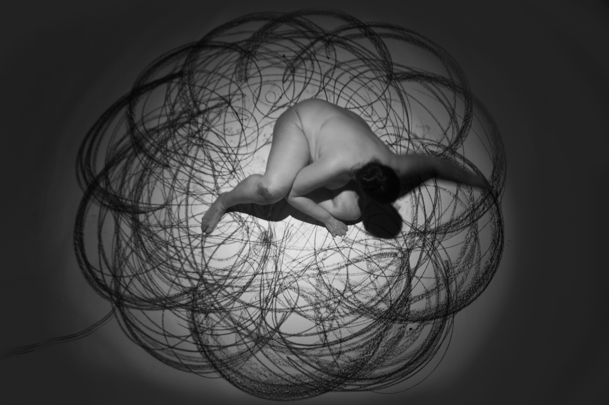
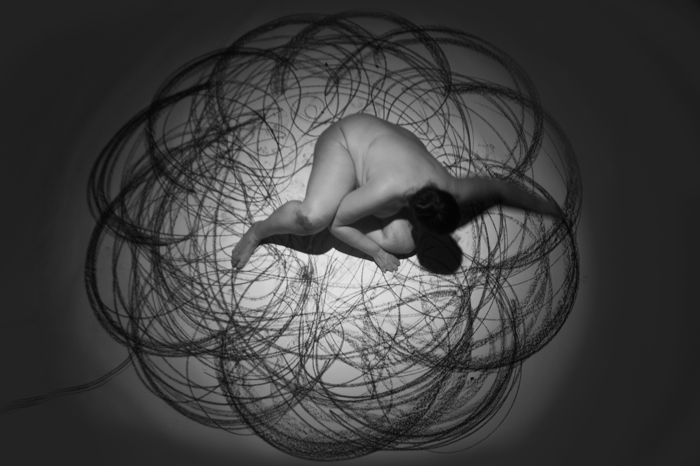
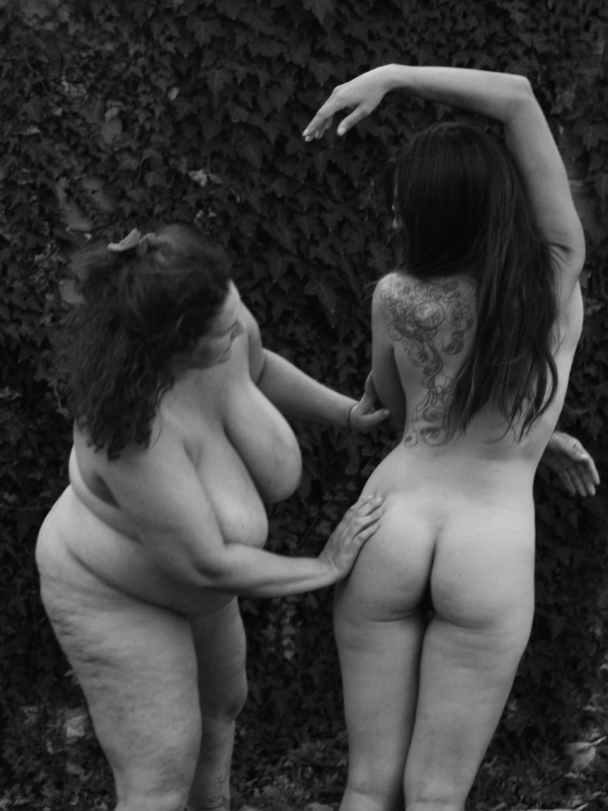
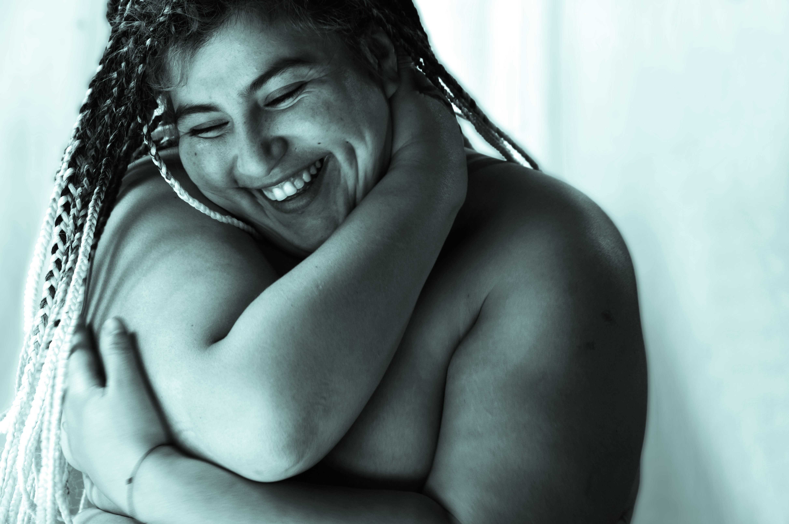
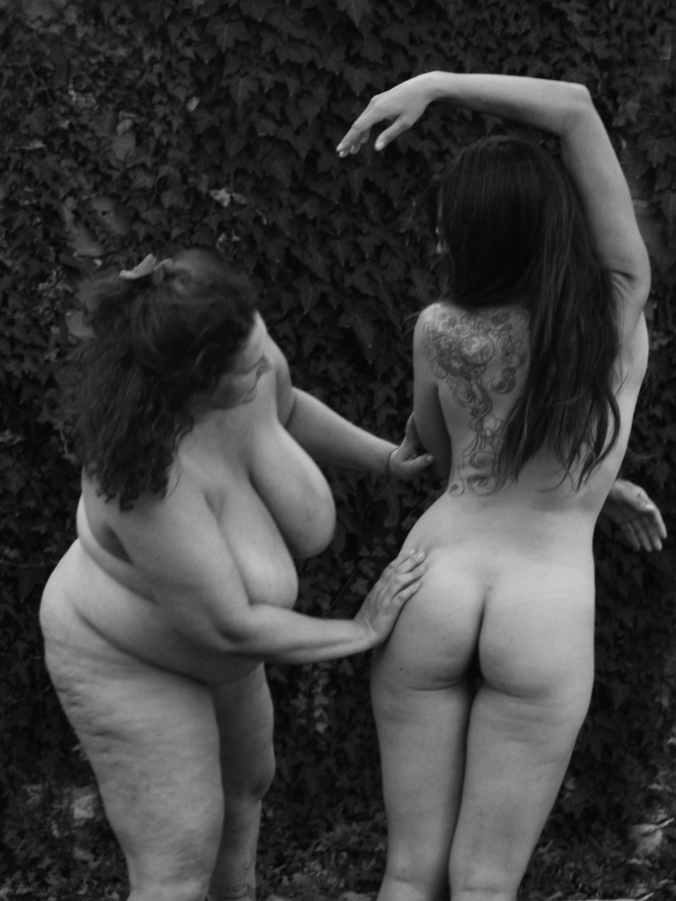
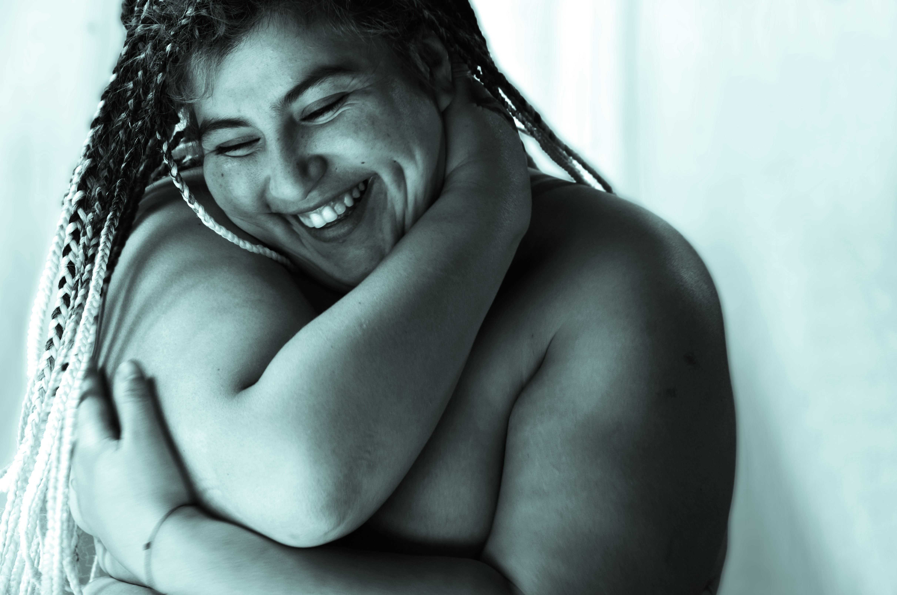
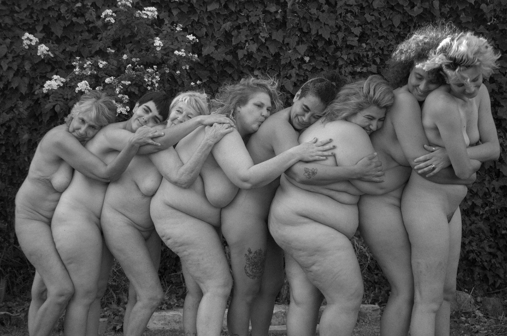
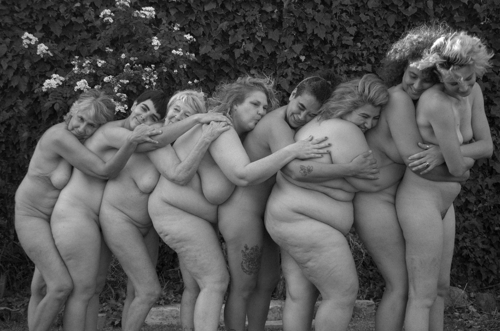

Nuestro Cuerpo Nuestro Territorio
Esta muestra surge de la construcción colectiva de la mirada como táctica y estrategia de resistencia a los modelos hegemónicos de la corporalidad. Somos Entrepieles, una colectiva formada por 25 personas del ámbito del arte y la salud convocadas a trabajar no solo la materialidad física del territorio cuerpo, sino también la presencia de la palabra, nuestro sentipensar, nuestras cicatrices, nuestras vergüenzas, nuestras identidades, nuestras historias de violencias, nuestros estereotipos, nuestras diversidades. Mostrándonos, abriéndonos, exponiéndonos, tejiendo redes, mutando y desacorazándonos; dejamos emerger nuestras voces internas, voces estruendosas, voces amorosas, nos fundimos en el dolor para transformarlo y reconstruirlo en un nuevo territorio en el que es posible quemar los finales pre establecidos y crear nuevos comienzos. Cada proyecto es un díptico fotográfico registrado por Karen Espada, en dos tiempos. La primera imagen fue tomada en sesión individual como parte de la Muestra Mi cuerpo mi territorio Y la segunda fotografía de la misma persona tiempo después, pensada, intervenida y producida desde la mirada colectiva en el transcurso de 2021 y 2022, en búsqueda de reivindicar al cuerpo como una geografía única y particular cuya mera existencia pone en cuestión el poder hegemónico de la mirada
 

 



 
